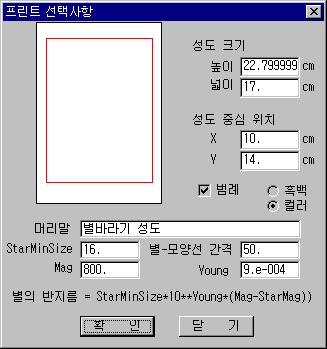

이제까지 여러분은 온 하늘 성도나 월별 성도, 계절별 성도 등은 많이 접해 보았을 것이다. 그러나 내가 원하는 별자리나 행성, 혜성을 중심으로 한 마음에 꼭 드는 성도를 구하기란 쉽지 않았으리라 생각된다. 별바라기의 인쇄 기능은 바로 여러분이 원하는 성도를 크기와 위치, 간격에 따라 손쉽게 얻을 수 있는 도깨비 방망이가 되어줄 것이다.
별바라기는 A4 용지의 가로 방향 인쇄를 기본으로 한다. 용지 크기는 변경 가능하지만, 환경 설정 윈도에서는 변경된 종이 크기를 제대로 보여주지 못할 수도 있다.
|
 |
| 인쇄 선택사항 |
별바라기에서는 화면에 보여지는 성도를 보이는 모습 그대로 인쇄할 수 있다. 인쇄될 성도의 환경 설정은 [성도 인쇄/비트맵 저장 환경 설정...] 메뉴에서 할 수 있다. 인쇄 환경 설정의 항목은 각각 다음과 같은 의미가 있다.
화면에 보이는 성도와 인쇄된 성도의 가로 세로 비율은 다르다. 물론 인쇄되는 성도의 크기를 조절하여 화면에 보이는 영역과 똑같이 인쇄할 수도 있다. 그러나 화면의 성도와 인쇄되는 성도의 가로 세로 비율을 똑같이 하는 것은 매우 힘든 일이다.
별바라기에서 인쇄시 기준이 되는 것은 성도의 가로 시야와 가로 크기이다. 화면의 가로 시야와 프린트 된 성도의 가로 시야는 같으며, 프린트된 성도의 세로 시야는 성도의 세로 크기에 의해 결정된다.
프린트 되는 글자의 크기는 화면에 보이는 비율 그대로 프린트 된다. 만약 화면 성도의 가로 크기를 반으로 줄여서 프린트하면, 폰트의 크기가 두 배가 되어 프린트 된다. 성도의 가로 크기는 반으로 줄었지만 성도의 시야와 성도의 폰트는 변하지 않았기 때문에 폰트는 성도 크기에 비해 2배 커진 셈이 되기 때문이다. 이때는 [선택사항][폰트...] 메뉴를 선택하여 글자의 크기를 성도의 크기에 맞게 줄이면 된다.
별바라기에서 보이는 성도는 비트맵으로 저장할 수도 있다. 비트맵 저장 환경 설정은 [성도 인쇄/비트맵 저장 환경 설정...] 메뉴에서 할 수 있다.
별바라기의 저작권은 대한민국의 저작권법과 국제 저작권 조약에 의하여 보호됩니다. 별바라기를 이용하여 인쇄하거나 비트맵으로 저장된 성도는 상업적으로 이용할 수 없습니다. 무료 배포, 포털사이트 동호회 게시물에는 자유롭게 사용할 수 있으며 이때에는 반드시 '성도작성: 별바라기' 문구를 명시해야 합니다. (저작권 참조)
별바라기 홈 최초 작성: 2026년 11월 01일, 최종 변경: 2026년 11월 01일